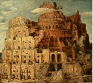

Ende der Übersetzung
← Zurück (Zusammengesetzte Sätze)
|
Inhaltsverzeichnis
|
Weiter (Andere Anwendungen der te-Form) →

Frame-Version
.
Anmerkungen und Kritik zur deutschen Übersetzung bitte an den jeweiligen Übersetzer
Daniel Gronau: Daniel.Gronau at gmx.de
Thomas Krause: thom_krause at web.de
Über Angebote zur Mitarbeit würden wir uns freuen.